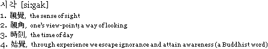

| tactuaL [si:gak] series _ empirical communication design of visual information focused on haptic interface using braille generating method |
|  |  |
since _ march, 2006 - february, 2008 main author _ Haemin Kim type _ Interactive art object medium _ Mixed Media Installation area _ design + craft + computer science special thanks to_ all the co-author & contributors |
| tactuaLife | tactuaList | tactuaLive | tactuaLink | |||
| tactuaL [si:gak] series is continuous project presenting a communicational method for the visually handicapped to the non-handicapped using physical computing. |
Dreaming a Fingertip Conversation with You _ tactuaL [si:gak] series #1 >>> get info . pdf |
SIGGRAPH2007 Art Gallery : Global Eyes aug . 05-09. 2007 San diego convention center, CA, USA |
>>> tactuaL [si:gak] series at flickr >>> tactuaL [si:gak] series at vimeo >>> wiring >>> processing >>> MAX/MSP & Jitter >>> seoul national university >>> sample electronics >>> dialogue in the dark >>> elizabeth goldring >>> suzung kim |
|||
| This study focuses on how to read textual expressions by using tactual & visual senses. Each installation works by an input signal from a touch sensor. Spectators can see texts and pictures, and hear the sounds by tactual input behavior. | dot . a scene = sinθ at the sea _ tactuaL [si:gak] series #2 a >>> get info . pdf |
TYPO Berlin 2008 »Image« : Berlin, Germany may.29-31.2008 thisAbility vs. Disability : Seoul, Korea July.22-Aug.24.2008 SIGGRAPH2008 »Evolve« |
||||
| Through this interactive process,
we can understand how the blind may feel. >>> abstract >>> press release |
| built with HTML & Creativity copyright 2008 - 2016 (at) haemin kim + all the co author & contributors |